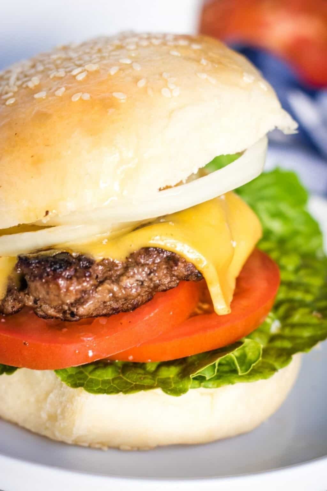

Easy Burger

Eat beef.
You know the drill. Made in america and made in the midwest. The pride and joy of knowing
that your local farmer would be hard at work at your next big burger barbecue. Know your
products and know them well. Drive your truck and drive home the flavor of midwest beef.
Ingredients
- 2 lbs ground beef
- 1 tbsp salt
- 1 tbsp pepper
- 2 tbsp dijon mustard
- 2 tbsp worcestershire sauce
Steps
- Mix by hand the ground beef, salt, pepper, dijon mustard and worcestershire sauce.
- Form light to medium size patties. You want fully cooked patties. This is not a steak.
- Cook around 2-3 minutes each side. Brown well and no, oil doesn't taste good if your patties are burnt.
- Rest your burgers on a plate, no paper towels needed.
- Prepare and serve with buns, cheese, lettuce, tomatoes, onions and ketchup.